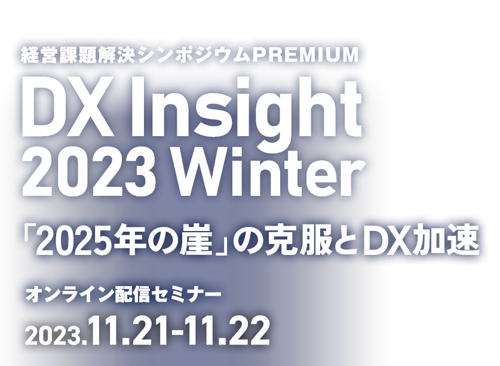

お申し込み受付を
終了しました
経済産業省が警鐘を鳴らす「2025年の崖」。
この克服とDX推進を啓発するために立ち上げられたオンラインイベントが「DX Insight」です。
日経BP 総合研究所と日経クロステック、日経ビジネスが主催し、毎年年2回（6月、11月）2日間連続で開催し、各日で1,000名（のべ1300名）を超えるビジネスパーソンにご登録・ご視聴いただいております。
今回の「DX Insight 2023 Winter」では、恒例の経済産業省のキーノートセッションでは2025年が目前に迫る中で、経済産業省としての政策の方向性を解説します。またDX銘柄2023のグランプリ企業やプラチナ企業、初選出企業をゲストとしてお迎えし、経営層がDXの具体的な指針を全社に示し、企業変革を推進する際の実践例、成功事例を具体的にお伝えしていく予定です。
また、DAY2のスペシャルセッションでは、20年に渡りビジョン共創支援を実施してきた中土井 僚 氏をお迎えし、DX推進のビジョンを描いて変革を推進するための具体的なヒントをお話します。是非ご期待ください。
アンケート回答者の中から抽選で100名様に
「Amazonギフト券（1,000円分）」進呈！
※２Days一括お申込で当選確率アップ
開催概要
- 名称
-
経営課題解決シンポジウムPREMIUM
DX Insight 2023 Winter 「2025年の崖」の克服とDX加速
- 日程
-
2023
年
11
月
21
日（火）
10：30～17：00
2023 年 11 月 22 日（水）
10：30～17：00
- 開催形式
- オンライン配信セミナー
- 主催
- 日経BP 総合研究所 イノベーションICTラボ、日経ビジネス、日経クロステック
- プラチナ協賛
-
- Boomi Japan、
- freee、
- 日立製作所、
- レイヤーズ・コンサルティング
- （ABC順）
- ゴールド協賛
-
- Board Japan、
- デロイト トーマツ リスクアドバイザリー、
- Denodo Technologies/ジール、
- KDDI、
- マネーフォワード、
- パーソルホールディングス、
- レッドジャーニー、
- サテライトオフィス
- （ABC順）
- 参加料
- 無料（事前登録制）
■視聴環境事前ご確認のお願い
Webセミナー【ライブ配信】ご参加にあたり、「視聴環境チェックサイト」での動作確認をお願いしております。音声および動画が正常に受信できるかを、下記「視聴環境チェックサイト」へアクセスしていただきご確認ください。
なお、お客様がご使用のパソコンおよび通信環境によってはWebセミナー【ライブ配信】にご参加いただけない場合がございますので、あらかじめご了承ください。
▼視聴環境チェックサイト（PC・スマートフォン）
https://ondemand.seminar.vcube.com/checker/videostream
※チェックサイトで視聴に問題がある場合は、まずセミナーの推奨環境に合っているかをご確認ください。
▼セミナー推奨環境(ビデオストリーミング配信の「受講者」の項目をご確認ください)
https://jp.vcube.com/support/requirements/req_seminar.html/
※受講者側で推奨しているPCブラウザ・OSは、以下となります。
Windowsプラウザ・・・Windows：Microsoft Edge、IE11、Firefox、GoogleChrome
Macブラウザ・・・safari
WindowsOS：Windows 10、Windows 8.1
MacOS：macOS 最新版
※受講者側で推奨しているスマートフォン・タブレットのブラウザ・OSは、以下となります。
iOS ・・・iOS デバイス iOS 7以上、safari
Android・・・ Android 4.4以上、chrome
※インターネット環境によっては視聴が出来ない場合がありますので、視聴確認サイトから、受講される環境にてテストをお願いします。
お問い合わせ
日経BP読者サービスセンターセミナー係
お問い合わせお申し込み受付を
終了しました